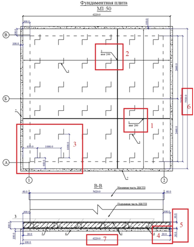
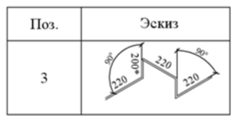
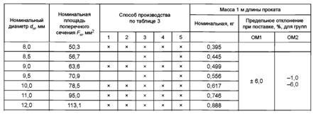
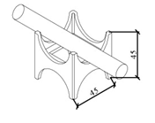
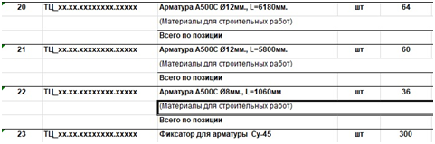

Армирование: расчет веса и количества

Армирование – это скелет железобетонной конструкции. И не у всех получается считать с первого раза. Кроме того, есть материалы, которые являются дополнительными и вспомогательными, и их также необходимо включать в смету при закрытии объемов работ.
Самый простой способ – взять лист из рабочей документации и переписать тоннаж арматуры, который там написан. Но ведомость объемов работ может быть просчитана с ошибкой или в процессе армирования были внесены изменения в конструктив, например заменили арматуру D8 на арматуру D12 по причине отсутствия необходимого материала на складе. Поэтому лист РД необходимо проверять. Для этого внимательно изучаем чертеж и считаем конструктивные элементы отдельно. Рассмотрим простой пример.

На рисунке есть обозначение шага продольной и поперечной арматуры (1, 2), привязка пространственных элементов (3), толщина защитного слоя (4, 5), а также общий размер конструкции между осями (6, 7). Также по схеме видно, что верхняя и нижняя сетки армирования – идентичны. А пространственный элемент представлен схемой.
Рассчитаем необходимое количество арматуры на фундаментную плиту.
| 1 | Арматура D = 12 мм A500C |
| 2 | Арматура D = 12 мм A500C |
| 3 | Пространственный элемент D = 8 мм A500C |
Продольная арматура
Данные: шаг арматуры 200 мм, длина всей конструкции 5920 мм, защитный слой 20 мм с каждой стороны.
Длина одного прута: 5920 – 20 – 20 = 5880 мм
Количество продольной арматуры: 5880 : 200 = 29,4.
Количество прутов: прибавим 1 прут, то есть 30 прутов на одну сетку, у нас их 2, поэтому 30 × 2 = 60 шт. При этом расстояние от края опалубки продольной арматуры будет чуть больше.
Поперечная арматура
Данные: шаг арматуры 200 мм, длина всей конструкции 6220 мм, защитный слой 20 мм с каждой стороны.
Длина одного прута: 6220 – 20 – 20 = 6180 мм.
Количество поперечной арматуры: 6180 : 200 = 30,9, прибавим 1 прут, то есть 32 прута на одну сетку, поэтому 32 × 2 = 64 шт.
Пространственный элемент

📣 Размер 200* означает, что это значение необходимо уточнить по месту. Попробуем его рассчитать.
Высота конструкции: 300 мм, защитный слой по 30 мм сверху и снизу: 300 – 30 – 30 = 240 мм. Верхняя часть элемента крепится к верхней сетке, поэтому из расчетной высоты вычтем еще 12 мм: 240 – 12 = 228 мм.
Общая длина прута: 220 + 228 + 220 + 228 + 220 = 1116 мм. По схеме из 36 шт.
Узнаем вес арматуры, который нам необходим. Вес 1 метра арматуры в зависимости от диаметра указан в таблице 1 ГОСТ 34028-2016.Исходное изображение недоступно. Адрес источника

Берем данные по весу 1 метра арматуры из ГОСТ 34028-2016 и умножаем на количество прутков.
Для диаметра арматуры D12:Исходное изображение недоступно. Адрес источника
Для пространственного элемента:
| 1 | Арматура D = 12 мм A500C | 313,268 кг | 664,48 кг |
| 2 | Арматура D = 12 мм A500C | 351, 22 кг | 664,48 кг |
| 3 | Пространственный элемент D = 8 мм A500C | 15,869 кг | 15,869 кг |
Получается, что для прутка D12 необходимо: 313,268 + 351,22 = 664,48 кг, а D8 – 15,869 кг. Такой способ расчета используют при закрытии объемов в КС-2. Но здесь есть небольшое уточнение. Если заказывать арматуру таким способом расчета, то ее просто не хватит для выполнения работ. Разберем подробнее.
Пример. Как определить необходимый объем арматуры
Стандартная длина прута: 11,7 м,
Вес одного прута D12: 11,7 × 0,888 = 10,39 кг.
Общее количество прутов арматуры: 664,48 : 10,39 = 64 шт.
Из одного прута вы не сможете собрать 2 элемента продольной или поперечной арматуры, так как 5,88 + 5,88 = 11,76 м, это больше 11,7 м, или 6,18 + 6,18 = 12,36 м, это еще больше, также если комбинировать 5,88 + 6,18 = 12,06 м.
Для правильного выполнения армирования такой конструкции придется заказать: 60 + 64 = 124 прута арматуры D12.
Рассчитывать объем арматуры для точечных объектов, как в примере, невыгодно. Поэтому в таких ситуациях выгоднее использовать внахлест арматуру в местах, где будет недостаточно длины, и это будет изменением проектного решения, которое необходимо согласовывать. Но так вы сможете снизить перерасход материала.
Также не стоит забывать о фиксаторах арматуры, которые создают защитный слой бетона снизу и сбоку, если армируете колонны, стены и другие вертикальные конструкции. Их нужно рассчитывать приблизительно в количестве 7–8 шт. на 1 кв. м.Исходное изображение недоступно. Адрес источника

Рекомендуем обратить внимание на такой материал, как вязальная проволока.
ГОСТ и СНиП не регламентируют расход вязальной проволоки, поэтому расход проволоки вычисляют исходя из диаметра применяемого прута
Например, на прут диаметром 12 мм принимаем расход проволоки 0,25–0,5 м.
Диаметр проволоки зависит от диаметра арматуры.
| Диаметр арматуры, мм | Диаметр проволоки, мм |
| 10–12 | 1,0–1,2 |
| 12–16 | 1,3–1,4 |
| 16–18 | 1,6 |
| 18 и более | 2,0 |
Вязальную проволоку в смету включают в том случае, когда она не заложена в расценке на работы. Давайте рассчитаем количество вязальной проволоки. Здесь есть два варианта расчета.
Вариант 1. Исходя из тонны арматуры. Например для вязки арматуры D12 расход проволоки будет равен 6,266 кг. Стоит учесть коэффициент на запас – от 15 до 30 процентов.
Вариант 2. Рассчитать количество проволоки исходя из количества узлов армирования, принимая во внимание расход 0,3 м проволоки на один узел. Этот вариант подойдет для простых конструкций.
Смета будет выглядеть примерно так.

Как правильно рассчитать объемы армирования
Чтобы корректно рассчитать армирование, нужно разобрать схему на детали и внимательно ее изучить, так как в проекте часто встречаются ошибки. А при точечном строительстве всегда обращайте внимание на раскрой арматуры.